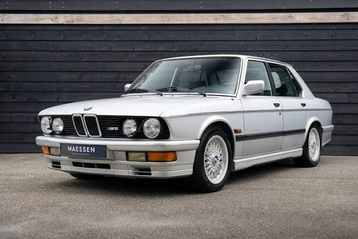
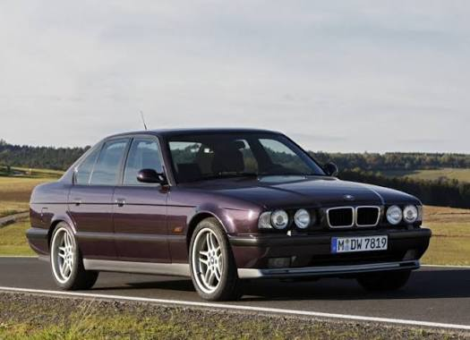
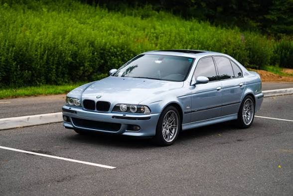
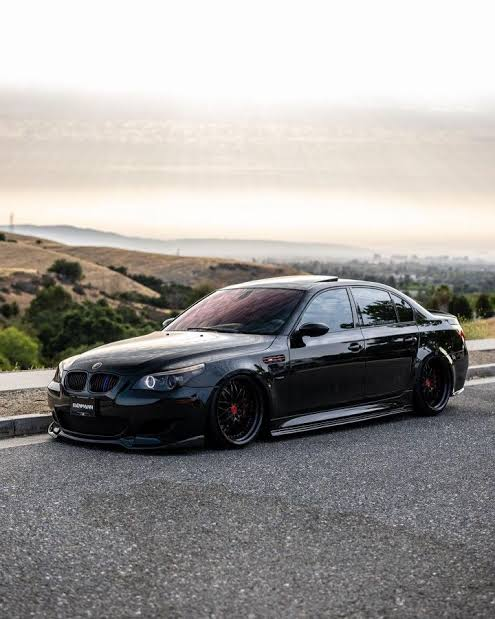
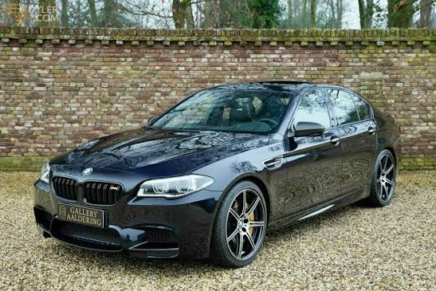
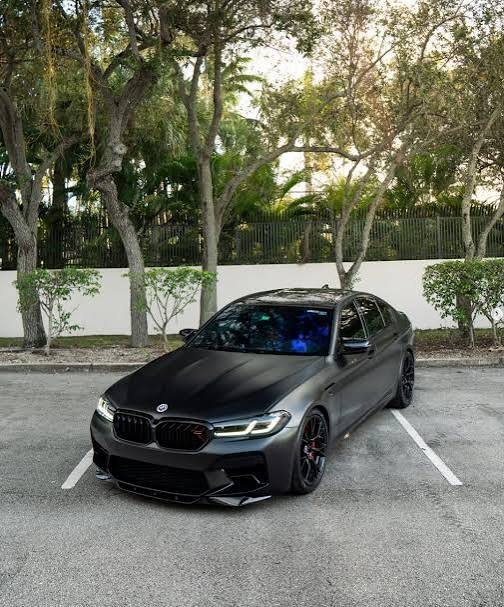
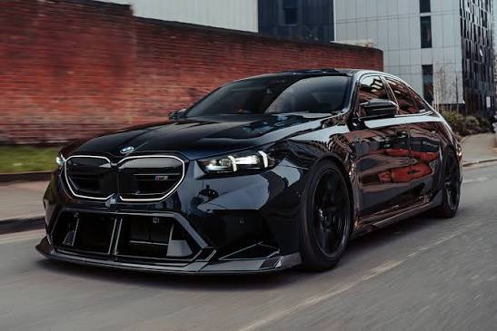

🔗 Читати детальніше на ВікіпедіїОпис та історія: Перше покоління M5, найшвидший серійний седан свого часу.

🔗 Читати детальніше на ВікіпедіїОпис та історія: Легендарне ручне збирання у Гархінгу.

🔗 Читати детальніше на ВікіпедіїОпис та історія: Культовий бізнес-седан з атмосферичним двигуном V8.

🔗 Читати детальніше на ВікіпедіїОпис та історія: Унікальна M5 з високооборотним двигуном V10 у стилі Формули-1.

🔗 Читати детальніше на ВікіпедіїОпис та історія: Перехід на турбований двигун V8 Twin-Turbo.

🔗 Читати детальніше на ВікіпедіїОпис та історія: Перша M5 з інтелектуальним повним приводом M xDrive.

🔗 Читати детальніше на ВікіпедіїОпис та історія: Нове покоління з гібридною силовою установкою M HYBRID.